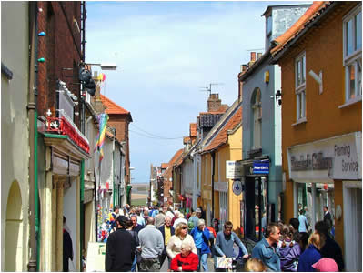
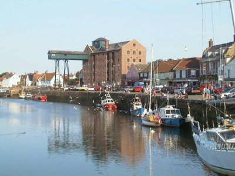
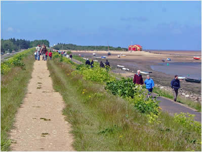

Exploring Wells-next-the-Sea
There are lots of interesting places to explore in Wells...
Wells Town
Wells is a traditional seaside town, charming and picturesque with lots of narrow lanes and interesting shops to explore. There is something to be seen at all times of the year. During the winter thousands of Pink foot geese gather around the coast, leaving the fields inland to roost on the marshes overnight, a spectacular sight. Curlews, sandpipers, egrets can also be seen feeding in the channel and marshes. Wells is a drying harbour so the fishing boats wait for high tide to go out and bring back their catch of lobster and crabs.
Wells Harbour
The summer brings with it crabbing from the quayside (local name gillying), the harbour filled with yachts of all shapes and sizes, the fish caravan on the quayside selling local crabs and lobsters. The traditional Wells carnival is held for one week around the first week in August. Various events for adults and children are held around the town including live music, BBQ’s, competitions and workshops finishing with the carnival procession winding its way around the town.
The Sea Wall
From the quayside the sea wall runs alongside the channel to the lifeboat station and beach, with miles of golden sand and colourful beach huts. The Lifeboat House on the beach is often open to visitors, the nearby Coastwatch station is open every day and welcomes visitors with one of the best views of Wells beach.